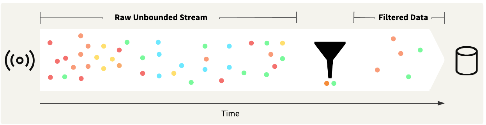
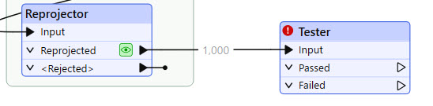
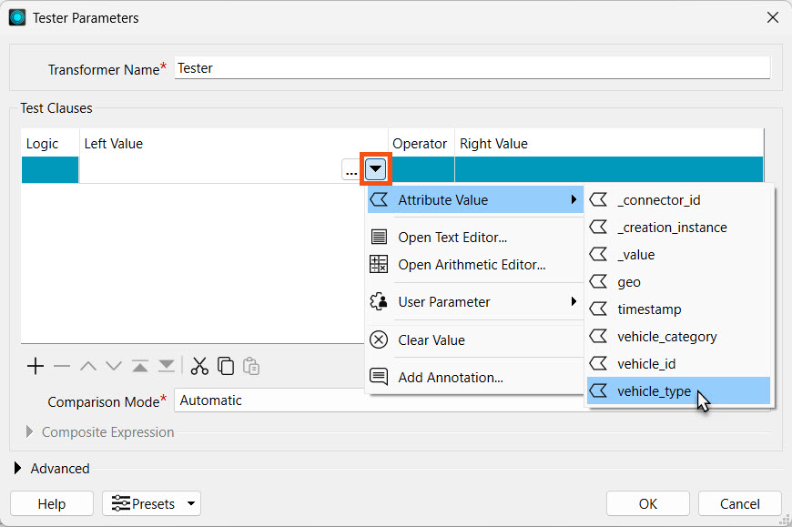
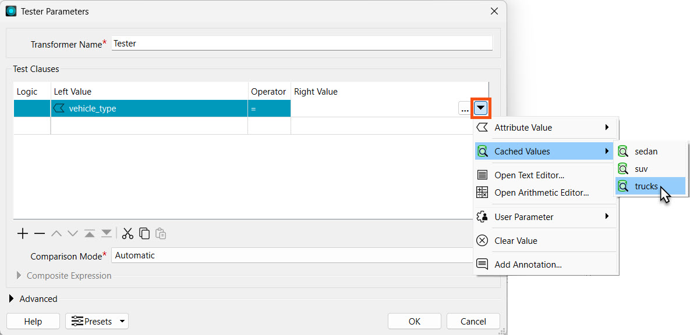
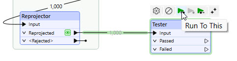
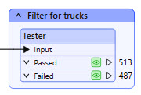

After completing this lesson, you will be able to:
Stream data usually consists of high volumes that arrive at high velocities. To analyze the data, you likely need to filter the data to include only the records that are actually of interest. The easiest method of filtering stream data is to filter by attribute.

To filter by attribute, you usually test each data record against a condition. If a data record does not meet the specified condition, the transformer routes it to an alternate port. Some standard transformers that you may use to filter stream data by attribute are:
Ultimately, filtering stream data by attribute works the same as filtering static data by attribute. The only difference is that, as a stream, the workspace is always running and actively filtering the data as it arrives.
In the last exercise, you connected to the stream of City of Vancouver fleet GPS locations using a KafkaConnector. Jennifer already extracted the JSON into attributes from the data stream and created geometry for the vehicle locations. Now, Jennifer only needs to process and send alerts for trucks in the fleet.
In this exercise, you will:
Continue with the same workspace open in FME Workbench from the previous exercise.
Add a Tester and connect it to the Reprojector.

Open the Tester properties. For Left Value, set the Attribute Value vehicle_type. The Operator should automatically populate to =.

Then, assign the Right Value to trucks from the Cached Values.

Run the workspace to the Tester. Since you have cached data in the Reprojector, you may use the Run to This function for the Tester to run the cached data through the Tester and generate its caches.

Add a bookmark or annotation for the Tester. As we continue to build our workspace in the following lessons, it is best to document our progress at each step. If you or someone else returns to your workspace, the annotations will tell them the function of each part.

The records that pass through the Passed port are trucks. Due to the nature of streaming data, the data counts will differ between your workspace and the example shown here.